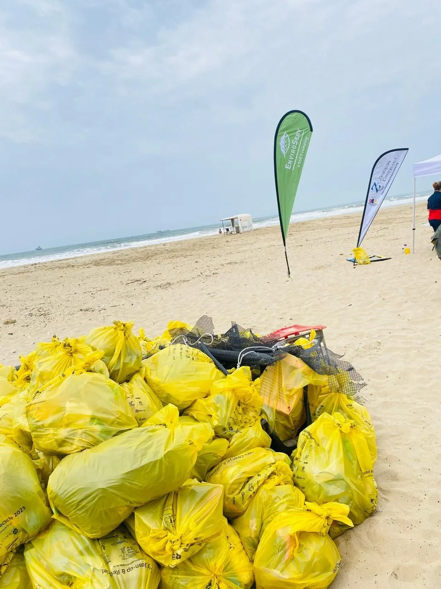
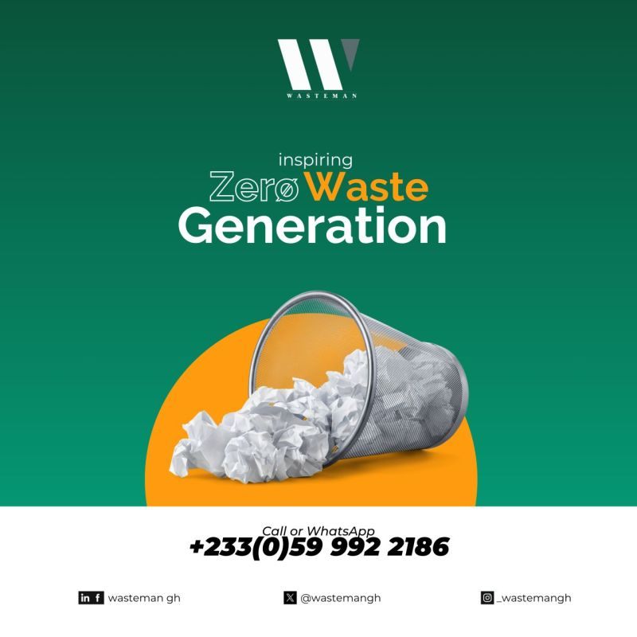

Commercial pressure handled through pricing, quotations, KPIs, tenders and account maintenance.
Durban, KwaZulu-Natal | Key accounts, retention and commercial follow-through
Major accounts need someone who remembers every promise.
Launell Govender is a key accounts expert who turns service complexity into steady customer trust: retention rhythms, CRM accuracy, quotations, tenders, SLAs, pricing detail, and practical coordination across teams.
Currently spotlighting client retention
Experience supporting large, recognizable customer relationships with steady communication.
Waste regulations, hazardous waste awareness, recycling, treatment and alternatives to landfill.
Account playbook
A practical operating system for customer confidence.
Every account needs a person who can listen, price, coordinate, document and retain. Launell's strength is making those moving parts feel controlled.
Listen
Start with customer needs and account context.
She identifies customer needs, service requirements, recurring queries, satisfaction risks, and the internal teams needed to resolve them.
Live value builder
Choose what to emphasise
Balanced key account profile
Launell's portfolio currently highlights Retention and Revenue.
My Journey
Built through every layer of account service.
From sales administration to technical sales, sales consulting and key account consulting, her career shows practical growth inside real customer operations.
Key Account Consultant
Client retention, monthly KPIs, SLAs, price adjustments, quotations, CRM records, tenders and landfill-alternative conversations.

Sales Consultant
Account maintenance, pricing, tender documentation, contract updates, data sheets and sustainable service improvement.

Technical Sales Assistant
Safe disposal certificates, job cards, labels, service codes, sales documentation, quotations, proposals and customer communication.
Sales Administration Assistant
Client calls, service messages, quotation capture, data sheets, service-code follow-up, job cards and labels.
Public LinkedIn signals
Proof points that reinforce her account story.
Public sources confirm the role signal and the company context around customer partnership, zero-waste delivery and community cleanup impact.
Role signal
Key Accounts Consultant
Public LinkedIn result positions Launell as Key Accounts Consultant at EnviroServ Waste Management Ltd.
Customer value Trusted partner mindsetEnviroServ emphasises tailored, measurable support for customers navigating complex ESG and waste requirements.
Team delivery Zero waste milestoneA public post highlights 32.60 tonnes diverted from landfill through management, separation and collaboration.
Community impact Cleanup collaborationIWMSA highlighted a cleanup with EnviroServ and Komatsu where over 5 cubic metres of waste was collected.
Capability stack
Quiet precision, repeated daily.
Key account management
Client retention
SLA management
Revenue target ownership
Quotations
Tender submissions
CRM administration
Price adjustments
Waste regulations
Service issue resolution
Connect
Bring a key accounts expert into the conversation.
For roles, client-service opportunities, account consulting, sales support and specialist service coordination, reach her directly.
- Location
- Durban, KwaZulu-Natal
- Phone
- 082 779 6300
- Languages
- English